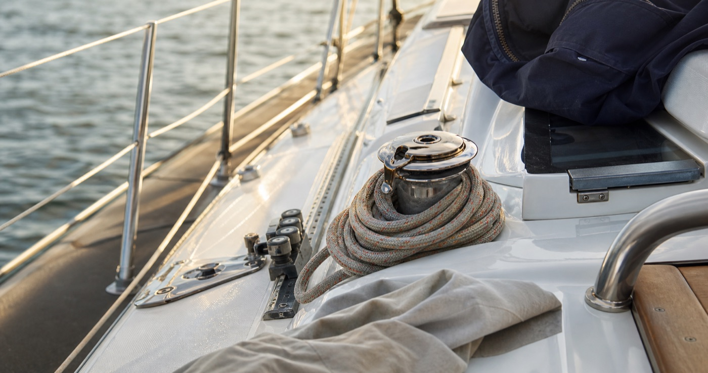
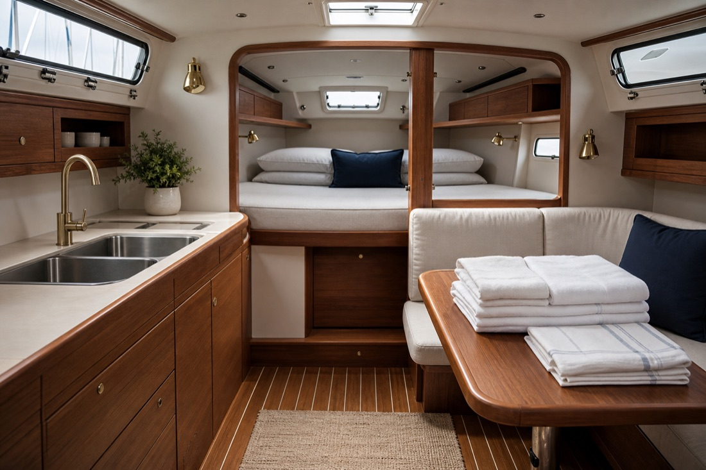
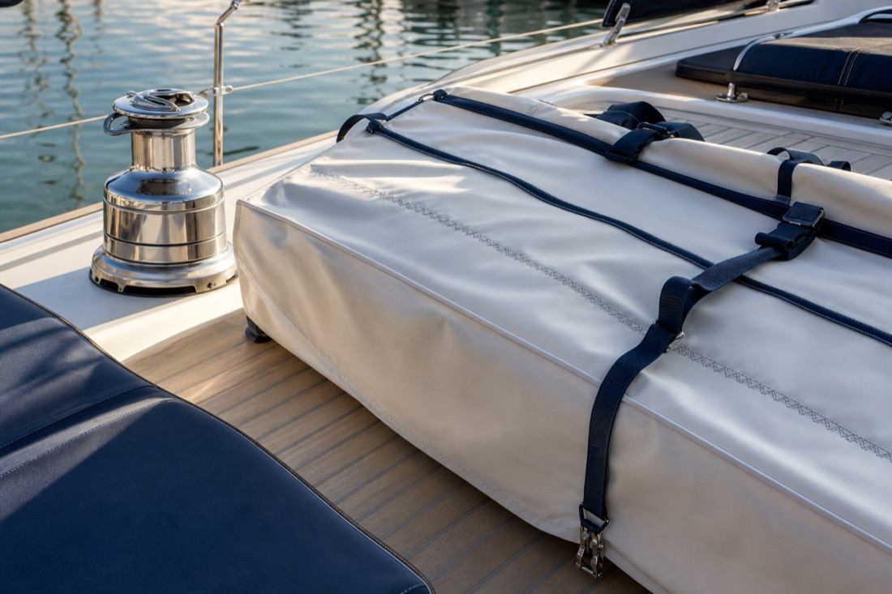
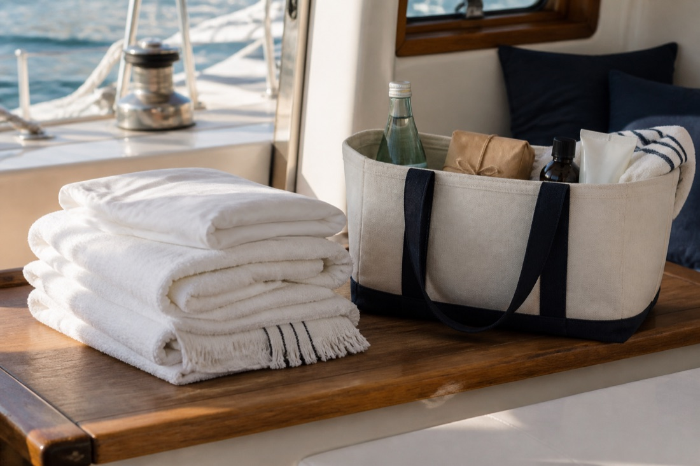

Core reset
On board cleaning
Salt, sunscreen, crumbs, wet gear, and the general evidence of a good sail.
Eastern Suburbs, Sydney
You sail. We reset the boat.
On board and below deck cleaning for sailors who come back tired and want the boat sorted before the second drink.

The reset
Core reset
Salt, sunscreen, crumbs, wet gear, and the general evidence of a good sail.
Core reset
Cabins, galley, heads, surfaces, and the bits that need a practical eye.
Core reset
A proper reset so the boat feels ready when you next step aboard.
Useful extra
Clothing, sheets, towels, and soft goods taken off your hands.
Useful extra
The basics topped up without turning your afternoon into errands.
Premium add-on
Optional sail pack-away for owners who want the fancy finish.



Why call
Call the Deckhand understands sailing, what boats need to run smoothly, and how little patience crews have after a long harbour session.
Boat-savvy
No briefing on winches, sheets, sail bags, wet gear, heads, or the difference between a galley and a kitchen.
Fast
Step off, hand over the list, and let the boat get sorted while the crew disappears for the second drink.
Thorough
Salt, sunscreen, crumbs, damp linen, cabin surfaces, and the tiny jobs everyone saw but quietly ignored.
Smooth
A cleaner, calmer boat with essentials checked, laundry moving, and gear put back where it should be.
Local
Practical, discreet, quick on the uptake, and just cheeky enough to know what the boat needs before anyone makes a speech.
How it works
Service area
Call the Deckhand is a one-woman reset service currently operating from Sydney’s Eastern Suburbs, built for owners and crews coming back tired from harbour sails.
Pricing cue
Exact prices are not published yet. Standard resets stay practical. Enquire with the boat size, location, timing, and job list so the quote fits the actual reset.
Standard reset
On board cleaning, below deck cleaning, and post-sail packdown for boats that need to feel ready again.
Useful extras
Laundry runs for clothing and sheets, plus essentials pickup when the boat needs topping up.
Luxury add-on
Sail pack-away is available at a luxury price for owners who want the fancy finish.
About
Call the Deckhand is launching for owners and crews who want the clean, reset, and packdown handled by someone who understands the rhythm of a sailing day.
One woman means direct communication, consistent hands on the boat, proper care, and clear accountability from enquiry to final wipe-down.
Contact
Send the boat, location, timing, and reset list. Email, call, or DM and the job can be shaped from there.